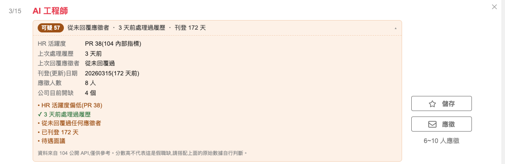
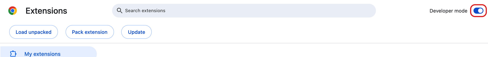
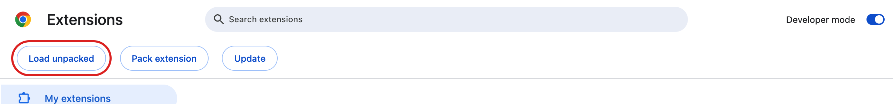
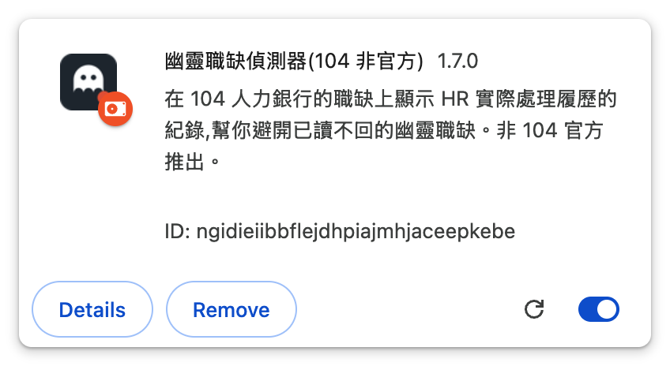
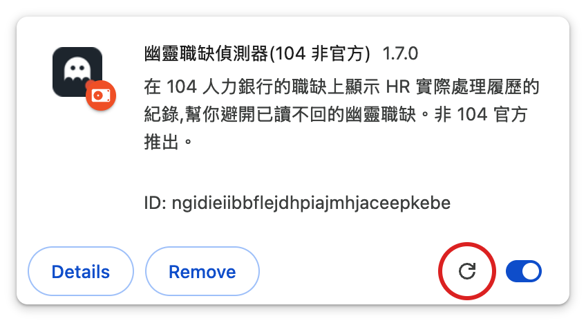

投了履歷沒回音，不一定是你不夠好，有可能那個缺根本沒人在看。
在 104 人力銀行的職缺上，把 104 手上有、但頁面上不顯示的那半邊數據直接印出來。
第三方獨立開發，非 104 人力銀行官方產品。

上面那個缺掛了 150 天（紅色），但 HR 七天內仍處理過履歷（綠色 ✓）。掛得久多半是常年開缺，不是幽靈職缺。（公司名稱、職稱為佔位內容，數據是真實輸出。）
01 · 它解決什麼問題
104 的資料庫記得每個職缺"上次處理履歷"和"上次回覆應徵者"是幾天前，而且載入職缺時就把這些欄位送到你的瀏覽器了，但頁面上只顯示正面的那一半："3 天內處理過履歷"會出現，"近 30 天內一個應徵者都沒回覆過"則整行消失。應徵人數也一樣，只給"6~10 人"的級距，不給精確數字。
這個外掛把另一半補上，然後就閉嘴：不評分、不分級，也不推論職缺真假。
02 · 它會顯示什麼
| 項目 | 說明 | 104 自己有顯示嗎 |
|---|---|---|
| 處理履歷 | HR 最後一次點開履歷是幾天前 | 只顯示有紀錄的情況，無紀錄時整行消失 |
| 回覆應徵者 | 公司最後一次透過 104 站內回覆是幾天前 | 同上 |
| 應徵 | 精確人數，取不到時退回級距 | 只給級距（0~5／6~10／11~30／30 人以上） |
| 刊登 | 原始日期＋換算成幾天前 | 只給日期，不換算 |
| 重新刊登 | 本外掛長期追蹤到這個缺被重貼幾次 | 完全看不到 |
| 公司開缺 | 這家公司同時開幾個缺 | 公司頁有，職缺頁沒有 |
只有三種視覺標示，都不是分級：
處理履歷或回覆應徵者 ≤ 7 天。好消息：HR 這幾天真的在動。
刊登超過 60 天。值得多看一眼，不是"這是假缺"。
刊登 60 天以內。這個欄位要換算成天數才有意義。
03 · 為什麼不評分
早期版本有一套 0~100 的評分與四級分級，後來整套移除。2026-09-05 抽樣 1,039 個不重複職缺，那些扣分規則的前提站不住："掛越久越沒人管"不成立，掛越久的缺，HR 反而越沒問題。
| 刊登 | 筆數 | HR 七天內仍在處理履歷 | 30 天零動作 |
|---|---|---|---|
| > 30 天 | 89（8.6%） | 93.3% | 0 |
| > 60 天 | 39（3.8%） | 89.7% | 0 |
| > 90 天 | 15（1.4%） | 86.7% | 0 |
| > 180 天 | 3（0.3%） | 100% | 0 |
憑感覺訂的門檻做不到這件事，所以現在只呈現數據，判斷交給使用者。完整分析 →
04 · 安裝
到最新版本頁面下載 ghost-job-detector-x.y.z.zip，解壓縮到一個你不會刪掉的資料夾。Chrome 之後每次啟動都會去那個位置讀，資料夾搬走或刪掉，外掛就會失效。
在 Chrome 網址列輸入 chrome://extensions/ 後按 Enter。
裝好之後也要保持開啟，關掉它，這個外掛會被 Chrome 一起停用。這是"裝了但沒反應"最常見的原因。

這個按鈕只有在開發人員模式打開後才會出現。選資料夾時要選含有 manifest.json 的那一層，不是它的上層。


到 104 找工作 搜尋，每張職缺卡片上會多出一列數據。安裝前就開著的 104 分頁，記得重新整理。
有新版時：下載新版 zip，解壓縮覆蓋掉原本那個資料夾（位置不要換），再到 chrome://extensions/ 點外掛卡片上的重新載入，然後重新整理 104 的分頁。

05 · 支援環境
| 環境 | 支援 | 說明 |
|---|---|---|
| Chrome（桌面版） | ✅ | macOS、Windows、Linux 都可以 |
| Edge、Brave、Vivaldi | ✅ | 同為 Chromium 核心，安裝方式相同 |
| Firefox、Safari | ❌ | 擴充功能格式不同，目前沒有對應版本 |
| 手機／平板 | ❌ | Android 與 iOS 版 Chrome 都不支援擴充功能，是瀏覽器本身的限制 |
06 · 裝了但沒反應？
這是最常見的原因。手動安裝的擴充功能靠它才能執行，安裝完把它關掉，外掛就會一起被停用。到 chrome://extensions/ 確認右上角的開關是開的。
外掛只會在頁面載入時注入，已經開著的分頁要重新整理一次。
目前只在 104 的搜尋結果、AI 推薦、職缺內頁和公司頁運作，其他頁面（例如首頁、履歷管理）不會有徽章。
點瀏覽器工具列上的外掛圖示，確認"啟用偵測"是開的。
點"保留"，不要點停用。
那多半是 104 改版了。外掛的彈出視窗會顯示連續失敗的次數，麻煩到 GitHub Issues 回報。
07 · 覺得有用的話
這個外掛是免費的，也會一直免費：沒有付費版、沒有廣告、不蒐集任何資料。如果它幫你少投了幾個已讀不回的缺，可以請我喝杯咖啡。
不請也完全沒關係。真的想幫忙的話，回報問題或把它分享給正在找工作的朋友，對這個專案的幫助其實更大。
做這個工具的人
前聯發科資深技術經理（E10），兩次創業。我想幫跟我一樣，在工作中感到困擾、想找到熱情的人，用 AI 去嘗試、去發現讓自己快樂的工作。
會開啟 Substack 確認訂閱，再按一次就完成。